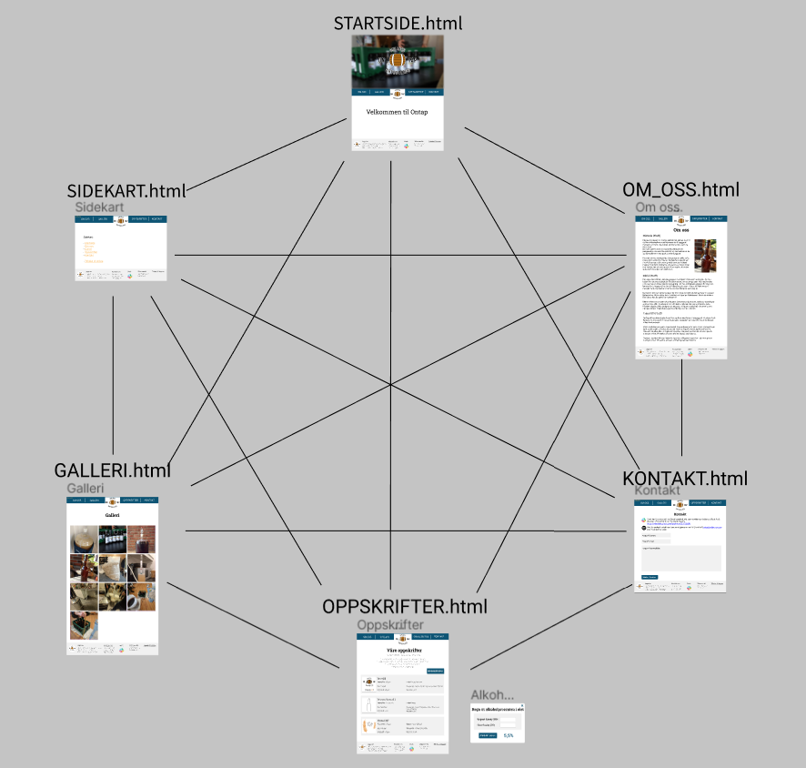
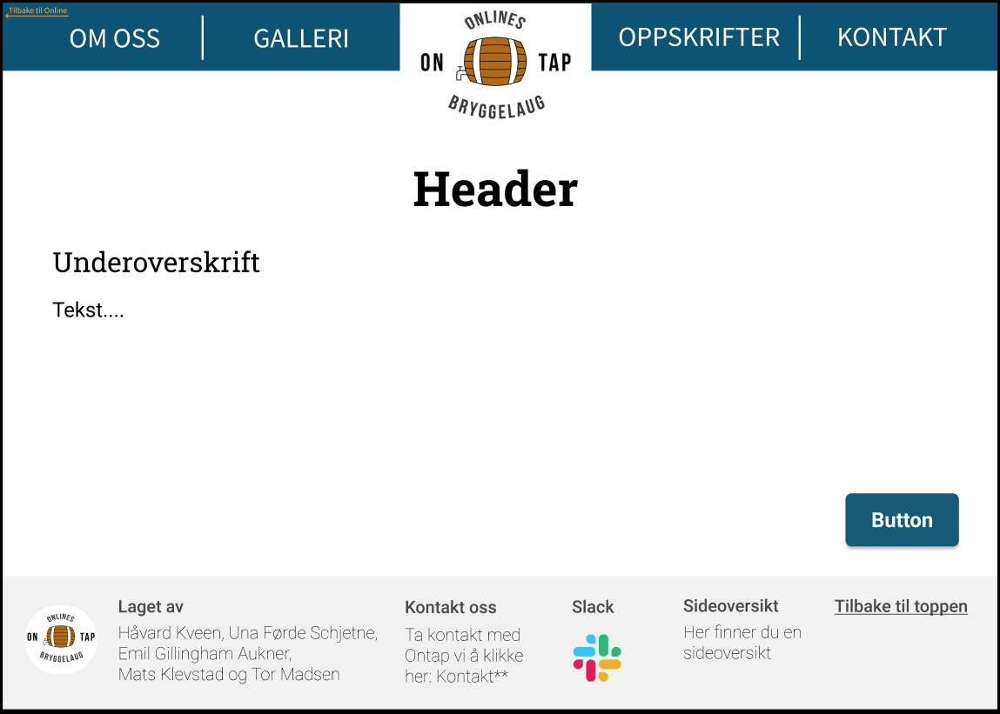
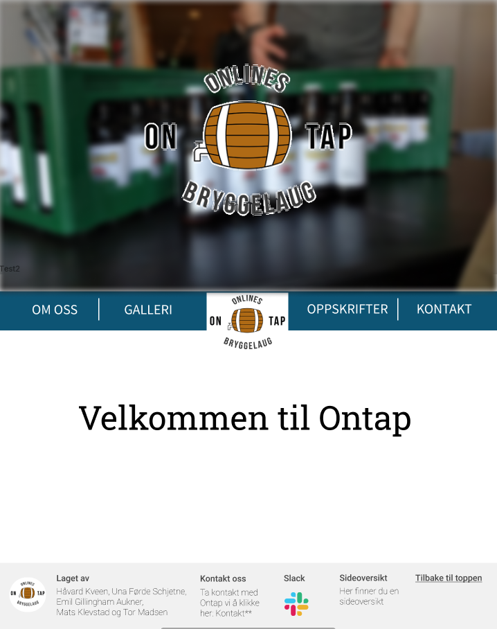
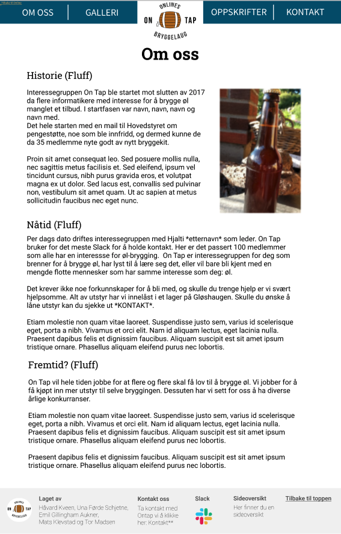
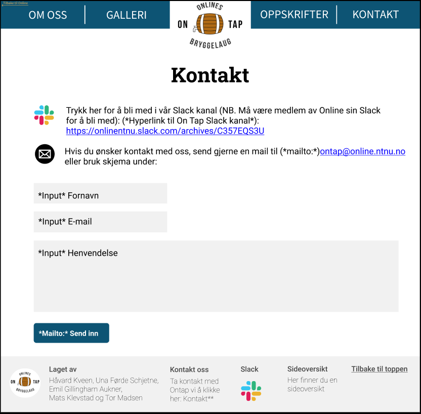
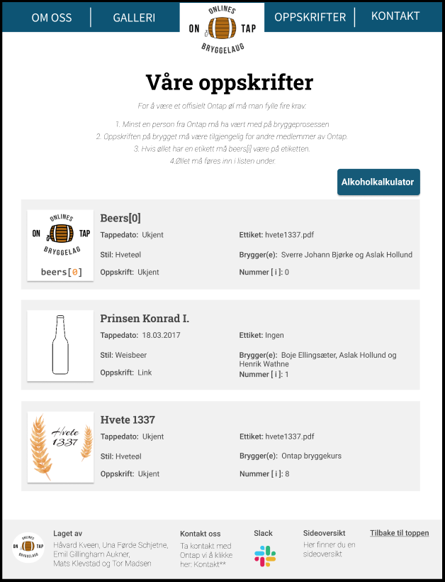
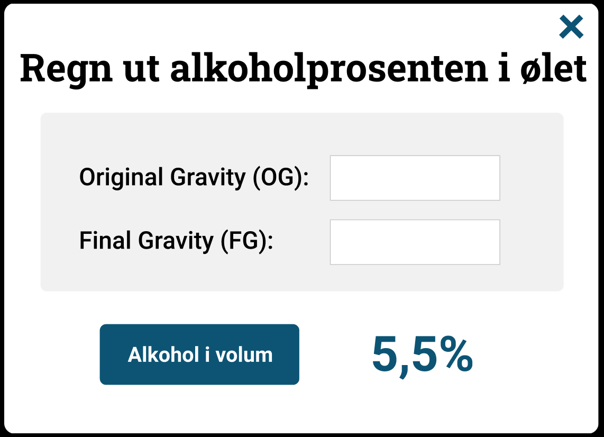
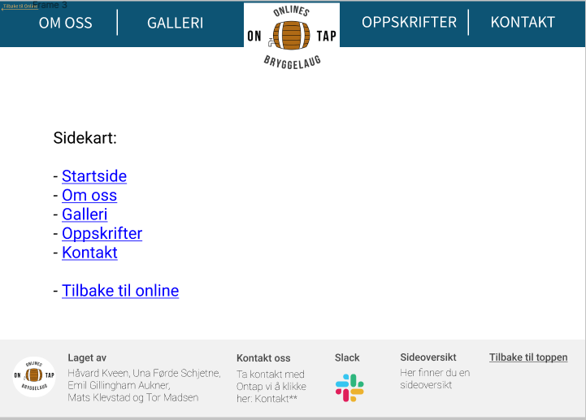

Prosjekt Innlevering P2
Dokument Detaljer
- Projekt Innlevering P2
- Laget av: Laget av Emil, Håvard, Mats, Tor og Una.
- Leveringsdato: 4. oktober 2020
Administrative Detaljer
- Klientens navn: Hjalti Hjaltason, leder av Ontap
- Nettsidens navn: Ontap
- Kontaktperson: Hjalti Hjaltason
Formål, mål og målgruppe
Målet med nettsiden er å være en informativ reklame slik at informatikkstudenter på NTNU er klar over tilbudet, og har en oversiktlig måte å ta kontakt. Dette skal vi utføre ved å ha et galleri, oppskriftsliste og infoside. Vi skal også ha en kontaktside som linker direkte til deres sosiale medier samt en epost sende funksjon slik at det er lettere for interesserte brukere å ta kontakt og finne ut mer om Ontap og eventuelt låne utstyr. Vi tenker også at nettsiden skal ha en tilbake lenke funksjon slik at man kan gå fra Ontap sin side tilbake til Online sin side. Brukerne skal være medlemmer av Ontap og informatikkstudenter som er interessert i å bli medlem av Ontap. De skal også ha mulighet til å kontakte Ontap om lån av bryggeutstyr. Hovedbrukeren er altså informatikkstudenter som vil brygge øl og bli kjent med andre som er interessert i det samme.
Navigasjonsstruktur
Brukerne skal kunne navigere til alle sub-nettsider fra forsiden og vice versa. Strukturen vil ha en clique som vist på bildet. Alle deler av nettsiden er tilgjengelig fra banneret og en tilbakelenke til Online sin nettside da det var noe klienten ville ha. Det vil være et sidekart tilgjengelig som linkes til i footeren for å gjøre oversikten enda tydeligere f.eks. for brukere som bruker teksttolker. Vi bruker en slik struktur slik at alle deler av nettsiden vil være enkelt tilgjengelig uansett hvor på nettsiden man er.
Layout
Design:
Målet med designet er å være oversiktlig og lett å navigere i. Designet skal etterligne Online linjeforening sin nettside for å gi brukeren en følelse av å ennå være i Online sitt domene. Med banneret og footeren vil alle deler av nettsiden være tilgjengelig uansett hvor på siden man er.
Fonter:
Online bruker Source Sans Pro og Source Serif Pro som vi vil også bruke i banneret. Tabene vil ha størrelse 40pt i banneret/navbar. For innholdet/knapper skal vi bruke fonten Roboto(30pt) og overskrifter vil ha fonten Roboto Slab (70pt) og være bold. Footer-teksten vil ha størrelse 25pt og være thin. Fontene vil ha svart farge(000000) utenom på banneret og knapper hvor de vil være hvite(FFFFF).
Farger:
- Navbar/banner: (0D5474)
- Footer: (F1F1F1)
- Bakgrunn: (FFFFFF)
- Oppskrift elementer: (F1F1F1)
- Online tilbakelenke: (FAB657)
Linker:
Banneret vil ha linker til alle deler av nettsiden og en logo som vil linke til startsiden. Det vil også være en hyperlink til Online i banneret som vil ha samme farge som Online sin logo. Footeren vil ha linker til kontaktsiden, Slack-kanal, epost og sidekart. Footeren vil også ha en link til toppen av siden.
Navbar(Banner)/Header:
Vil være på toppen av siden og vil følge viewporten nedover på siden. Skal følge standarden til online med lik farge(0D5474) og fonter. Når musen hoverer over overskriftene vil skriften bli understreket og uthevet.
Footer:
Laget av: (gruppemedlemmer), Kontakt (link til Kontakt-side), Ontap logo, link til sideoversikt. Width: 100%, height: 200px.
Logo:
Logo vil være plassert i sentrum av Navbar for å gjøre den lett synlig og tilgjengelig.
Knapper:
Knappene vil ha avrundede hjørner på 10px.
Innhold
Startside.html:
Dette er siden som vises når man først åpner nettsiden. Her vil vi ha et stort bilde i bakgrunnen som dekker hele skjermen med Ontap-logoen foran. Bakgrunnsbildet kommer til å ha en blur-effekt slik at logoen fremheves mer. Når du scroller nedover på siden vil banneret komme til syne, og enda lenger ned en overskrift hvor det står “Velkommen til Ontap”.
om_oss.html:
“Om oss”-siden skal ha som formål å fortelle om Ontap. Her vil vi ha tekst om historien til Ontap, hvordan interessegruppen er nå, og også om fremtidsplanene til ontap.
Historiedelen vil i hovedsak bestå av når, hvem og hvorfor Ontap ble et tilbud. Dette vil være interessant for leseren som dermed kan få et inntrykk av at Ontap har vært drevet i noen år.
Det som er mest interessant er nåtiden, her vil vi få frem informasjon om hvordan interessegruppen driftes per dag dato. Her vil det stå litt generell informasjon om hva Ontap går ut på, hvor man kan få utstyr, leder og antall medlemmer som er med i Slacken.
Sist vil vi kort ha med litt om fremtiden. Her må vi få mer informasjon fra klienten selv, men ser for oss at informasjon om at man vil ha mål om å brygge x antall øl i året eller ha konkurranser innad i bryggelaget kan være relevant.
Dette er en side som hovedsakelig vil bestå av mye tekst og ikke mye “fancy”, men vi vil prøve å spice opp siden med litt relevante bilder for å holde leseren interessert. Det skal være et slideshow bestående av tre til fire bilder hvor hvert bilde får fem sekunder før et nytt et vises. For å få dette til å virke skal vi bruke Javascript. Dette vil være plassert øverst i høyre hjørnet på siden.
Midt på siden vil det stå en “Om oss” overskrift som vil være bold med en skriftstørrelse på 70 pt. Det vil så være tre underoverskrifter som alle har en skriftstørrelse på 40 pt. Så vil selve avsnittene under underoverskriftene være bygd opp med 30 pt i skriftstørrelse.
Slik tenker vi oss at siden vil se (innholdet på avsnittene er bare eksempel foreløpig, men vil endres):
Kontakt.html:
Kontakt-siden skal ha en hyperlink til Ontap sin Slack-kanal og en mailto: link til deres epost. Slack kanalen og eposten vil ha icon bilder som også vil linke til eposten og Slack-kanalen. Icon bildene vil være 69x68px. På siden vil det være et epost skjema men den vil ikke være funksjonell da dette krever PHP som vi ikke kan bruke for dette prosjektet. Det vil i stedet være en plassholder for Ontap å evt endre på senere. Input boksene for epostskjema vil ha fargen (F1F1F1). Henvendelse boksen vil ha 80% width av siden og epost/navn boksene vil være 462x74 px. Alt innholdet vil være innenfor 80% width da margen vil være 10%. Målet med kontaktsiden er å gi en oversikt over kontakt-metodene til Ontap og for å kunne spørre om lån av utstyr som gjøres via Slack/epost. Kontakt-siden vil linkes fra banneret og i footeren for å være enkelt tilgjengelig.
Oppskrifter.html
Oppskrift siden viser alle oppskriftene som er laget av medlemmene i Ontap. Øverst på siden vil det være en liste med kravene for at det skal være et offisielt Ontap øl. Under vil alle de ulike Ontap ølene listes opp etter rekkefølgen de ble laget (eldst til yngst). Hver øl vil skrives inn i en lysegrå boks, i fargen #f1f1f1. Størrelse på boksen er 1310 x 265, og skal være sentrert i midten, og avstanden mellom boksene skal være 26px. Inne i boksene, til venstre, skal det være et bilde av etiketten til ølen. Den skal ligge 23px inn fra kanten av boksen og 31px avstand fra toppen og bunnen av boksen. Størrelsen på bilde er 217 x 323, og det skal ha litt skygge. Til høyre for bildet vil det være en underoverskrift med navnet på ølen, og under vil det være listet opp informasjon om ølen. Siden vil ha 10% marg og dytte innholdet til sentrum.
Rett over første oppskriftsboks, skal det være en knapp til høyre som heter “Alkoholkalkulator”. Den skal ha en størrelse på 270 x 85 og skal være i fargen #0D5474. Skriften skal være i fargen #fffff og være i størrelsen 30 pt, bold. Når du klikker på denne knappen skal en alkoholkalkulator dukke opp midt på skjermen, mens resten av bakgrunnen blir mørkere. Den vil ha en størrelse på 855 x 615. Overskriften her vil være midtstilt og 40px ned fra toppen. Under vil det være en boks i fargen #f1f1f1 med størrelse 750 x 255. Inne i denne skal det være to input bokser med størrelse 245 x 65 og en tynn kant i fargen #C4C4C4. Under denne grå boksen skal det være en knapp, “Alkohol i volum”, i fargen #0D5474 og størrelse 285 x 85. Til høyre for denne knappen skal alkoholprosenten vises. Den skal ha skriftstørrelse 70 pt og være i fargen #0D5474.
Galleri.html
Galleri-siden skal inneholde et utvalg av bilder som viser frem Ontap. Der er det blant annet bilder fra ølbryggingsprosessen og resultatene. Selve bildene på siden skal være like store kvadratiske thumbnails med størrelse 364px x 364px av bildene slik at siden laster inn raskt. På en standard skjerm skal bildene være i et 3 x 4(dette varierer med antall bilder. Foreløbig er det 10 bilder, dermed er det foreløbig 4 i y retning) grid, med avstand på 14px mellom thumbnailene og marg 10% på høyre og venstre side. Her er en mockup av hele galleri-siden:

Bildene skal øke med 18px (9 px i hver retning) i størrelse når musepekeren er over et bilde. Senterpunktet til bildet skal holde seg på samme sted når bilde øker i størrelse. Det skal ta et halvt sekund for bilde å øke i størrelse (dette kan hende endres senere). Her er et eksempel på dette:

Thumbnailene skal linke til en visning av det originale bildet når man trykker på det. Bilde skal da vises i sitt originale oppløsning og størrelseformat. Rundt skal det være en ramme som er like høy som bildet, men er 130px større i venstre og høyre retning. Midt mellom kanten til rammen og bildet skal det være knapper for å gå til neste bilde på høyre og forrige bilde på venstre side. Knappene skal være midtstilt på y akse i rammen. Resten av siden utenom banneren får et mørkt filter or å sette bildet i fokus. Her er mockup av det:

Sidekart.html
Vi skal ha et sidekart som er tilgjengelig i footeren, for å tilby en mer streamline og oversiktlig navigering av siden til de som ønsker det.
Minimumkrav Javascript
For å tilfredstille minimumskravene har vi disse Javascript-funksjonene:
- Verifisering av info i kontaktskjema:
- Alle felter må ha innhold
- Innført mailadresse må være på gyldig format (Har lokal prefiks, "@" og domene)
- Forstørre bilde i galleri når man trykker på det:
- Når du trykker på et bilde i gallerisiden skal det forstørres til original størrelse og legges foran resten av galleriet.
- Når bildet er i forstørret visning skal det også være piler som kan brukes til å bla til neste/forrige bilde og trykke utenfor visnings-rammen for å gå ut av forstørret visning.
- Alkoholkalkulator:
- Er i utgangspunktet skjult, men skal vises foran siden når man trykker på knappen på oppskrift-siden.
- Skal kunne regne ut alkoholprosent i ferdig produkt ved input av to verdier.
- Animert bilde på Om oss-siden:
- Vi skal ha et bilde på Om oss-siden som fungerer som et slags slideshow, her vil vi ha 3-4 fire bilder som går på rotasjon og byttes ut ca. hvert 5. sekund.
Planen Fremover
Under vil du se en oversikt over lister og mapper for prosjektet. Vi har klart å få tak i alt vi trenger, både av informasjon og bilder før vi startet å designe.
Alle filene vil være innenfor en mappe Ontap:
- startside.html
- oppskrifter.html
- galleri.html
- om_oss.html
- kontakt.html
- index.html (sidekart)
- images/
- ontap.ico
- slack.ico
- mail.ico
- ontap_logo.png
- forside.png
- banner.png
- ettiket1.png
- ettiket2.png
- ...
- thumbnail_bilde1.png
- thumbnail_bilde2.png
- ...
- bilde1.png
- bilde2.png
- ...
- modularity/
- menu.part
- scripts/
- alkoholkalkulator.js
- kontakt_verifisering.js
- galleri.js
- slideshow.js
- stylesheet.css
| Filnavn | Beskrivelse | Ansvarlige | Frist |
|---|---|---|---|
| startside.html | Startside | Håvard | 16.10.2020 |
| oppskrifter.html | Oppskriftsliste og alkoholkalkulator | Una | 16.10.2020 |
| kontakt.html | Oversikt over kontaktmåter og innsendingsskjema | Emil | 16.10.2020 |
| om_oss.html | Informasjon om hvem Ontap er og hva de gjør | Mats | 16.10.2020 |
| galleri.html | Galleri med bilder fra Ontap | Tor | 16.10.2020 |
| index.html | Sidekart | Håvard | 16.10.2020 |
| ontap_logo.png | Png av Ontap sin logo med gjennomsiktig bakgrunn | Tor | 10.10.2020 |
| menu.part | Felles elementer som er like på alle sidene, banner, footer osv. | Alle | 11.10.2020 |
| alkoholkalkulator.js | Javascript som regner ut alkoholprosent i en øl utifra original gravity og final gravity | Una og Emil | 28.10.2020 |
| kontakt_verifisering.js | Javascript for verifisering av input i kontaktskjema | Emil | 28.10.2020 |
| galleri.js | Javascript som forstørrer bilder i galleriet når man trykker på dem, skal også kunne bla gjennom bilder i forstørret visning ved hjelp av to knapper | Tor og Håvard | 28.10.2020 |
| slideshow.js | Javascript som skifter ut bildet på Om oss-siden med jevne mellomrom, skal rotere gjennom 3-4 forskjellige bilder | Mats | 28.10.2020 |
| stylesheet.css | css fil for stil av hele nettsiden | Alle | 28.10.2020 |
| Endelig kontroll og testing | Kontroll av alle filer og funksjoner for å forhindre feil. | Alle | 01.11.2020 |